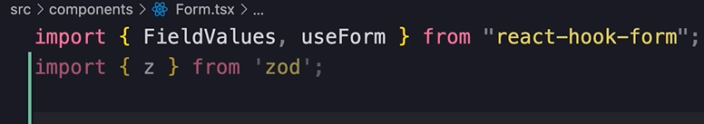
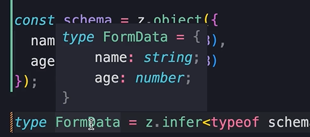

Schema Based Validation with Zod
Problem with our current validation implementation
Currently we have validation rules right in the middle of our markup.
As our form gets more complex we will end up with validation rules all over the place.
In that case its better to use something called schema based validation.
Validation Libraries
There are various validation libraries that allow us to define all of our validation rules in a single place.
This single place is called a schema.
Some popular schema libs...
Zod is what we will use in this course, but you must understand that Zod is quite vast, so we will only learn the basics of how to integrate it with ract hook forms.
If you want to go more in depth with the features of Zod, their documentation is well written.
Install Zod
The version I'm using now is...
npm i zod@3.20.6
Then import it to our form...
Using 'z' we can define the shape, or scheme of our form, and all its validation rules.
Defining the Forms Scheme
Next, we use z to define the shape.
So call z.object, and pass an object...
The object will hold propertys that represent our form fields.
Our name field is a string with a min of 3 chars...
By chaining method calls like this, we can define all of our validation rules in a single place.
Add a property for the age field as well...
Store the z object to a const
So we have called the object method, and passed a configuration object that represents the shape of our form.
This returns an object that we store in a const schema.
We could call it anything, but schema is a popular name.
So, store it like this...
Address duplication
Currently we have duplication, because we have defined the shape of the form twice...
See, name and age are duplicated...
Now, the great thing about Zod is that is has a method that allows us to extract a type from a schema object.
That means that we don't have to write out the FormData interface by hand.
Instead, we remove the interface, and use z.infer to store the form data as a typescript type that defines the shape of our object.
Like this...

If you hover form data, you will see that it represents an object with 2 propertys...
A typescript type is very similar to a typescript interface.
So that was the first step. Using Zod we defined a schema for our form.
Now we need to integrate react-hook-forms with Zod.
Integrate react hook form with Zod
First, we need to install a library that includes resolvers for various schema-based validation libraries.
It supports Zod, Joi, Yup, and many others.
This is the command for the library we are using...
npm i @hookform/resolvers@2.9.11
Then importzodResolver...
Using zodResolver
Now when calling the form hook, we pass a configuration obj to its parameter.
Then we set resolver to the zodResolver function we imported, and set the param of zodResolver to our schema obj.
Like this...
We're almost there. The next step is to consolodate our error messages.
Consolodate the error messages
First of all, you can remove the validation rules from the middle of our markup. We took care of that in the schema.
Just make sure to still spread register and pass name.
Also we don't need separate messages in our markup for the errors.
Instead, what we do is just check for errors.name and if it exist we render a p with the bootstrap class 'text-danger', and inside the p we render errors.name.message
In a moment, we will write our err msgs in our schema.
Do the same for age...
We haven't defined any err mesages, so we will get default ones from Zod.